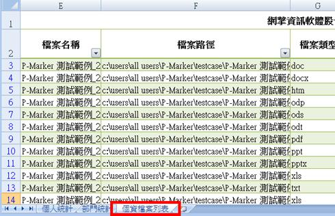
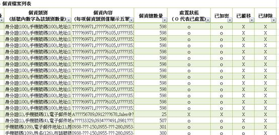

系統已經將檔案的處置結果結合在Excel個資盤點報表中（如何製作報表請參考<如何製作個資盤點報表？ ＞>）。要觀看結果請依照下列步驟：
(1) 開啟 Excel 個資盤點報表。
(2) 選擇「個資檔案列表」。

(3) 「個資檔案列表」裡有所有個資檔案明細，包含個資檔案的處置狀態。管理者可以透過這些欄位知道該檔案經過何種處理。
註：「處置狀態」打「ｏ」代表此檔案已經過使用者進行「加密」、「搬移」或是「排除」。
